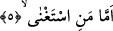
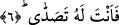

ifâde eden “ev/veya” edatı getirilmiştir.
Âyetteki
“yezzekkeru/öğüt
alacak”
fiili
kendisinden
önce
geçen
“yezzekkâ/temizlenecek” fiili üzerine atfedilmiş olup mânâ bakımından en başta yer
alan “terecci/ummak” hükmüne dâhildir.
“Fetenfe’ahû/ona fayda verecek” fiili “le’alle”nin cevabı olmak üzere mansubtur.
Buradaki “le’alle”, “leyte/keşke” fiiline benzetilerek böyle bir tahlil yapılmıştır.
Bu âyet-i kerimede kâfirlerin temizlenmesi için onlara yönelen kimsenin, bu
yönelmesinin ardından kâfirlerden bir temizlenme ve öğüt alma beklememesi
gerektiğine işâret vardır. Ayrıca bu âyette işâret edildiği üzere âlime lâyık olan;
öğrencisine bilgi verirken onun temizlenmesini kasdetmesi ve sıradan insanların
yaptıkları gibi onun biçimine; kılık kıyafetine bakmamasıdır. Öğrenciye gereken de ilim
öğrenirken kendi nefsini sapıklığın kirlerinden ve kalbini cehaletin pisliklerinden
temizlemeyi hedeflemesidir. Yoksa basit ve değersiz olan dünya metâını
arzulamamasıdır.
5. Kendini muhtaç görmeyene gelince
“Kendisini” îmâna, senin katındaki Kur’an’ın ihtivâ etmiş olduğu bilgilere ve irfana
“muhtaç görmeyene gelince”
6. Sen ona yöneliyorsun.
Ve sen a’mâya değil de bu kişiye yönelip onu irşad etmeye ve onu düzeltmeye özen
gösteriyorsun.
Bu âyet-i kerimede Peygamberimiz (s.a.)’i onlarla sohbetten son derece uzaklaştırma
vardır. Çünkü sırtını dönene yönelmek izzetli ve şerefli kimselerin âdetinden değildir.
“Tasaddî” herhangi bir şeye yönelmek, onunla ilgilenmek, onun durumuna önem
vermek demektir. Bunun zıddı “teşağğul/ilgilenmemek” kelimesidir.
Müfredat’ta açıklandığına göre “tasaddi” herhangi bir şeyi ses yankısının karşısına
dikmek anlamınadır.
Keşfu’l-esrar’da ifâde edildiğine göre “tasaddi” büyük bir arzuyla herhangi bir şeyin
karşısına dikilmek, ona yönelmek anlamındadır. Tıpkı susuzluktan kavrulan bir kimsenin
suyun karşısına dikilmesi ve ona yönelmesi gibi. Bazılarına göre “tasaddâ” kelimesinin
aslı “saded” kökünden türemiştir. Bu takdirde kelimenin anlamı; herhangi birisinin
karşısına dikilmek, onunla yüzyüze gelmek demektir.